5月16日、第16期マネジメントリーダーゼミ第1講「人間関係 — 人間観のつくり方」の本番に向けて、講師会のメンバーが一堂に会し、5時間プログラムの最終調整と、福嶋講師の60分講話リハーサルを実施。「自慢タイム短縮 → ディベート追加」「休憩を3回挿入」という二大改修で、初回の5時間がぐっと締まった。
過ぎるのが当たり前の文化はマネゼミとしてどうか 議論の中で投げかけられた問い
当日の流れ
1. 第1講タイムスケジュールの再設計
5時間プログラムを全員で精査。決まった改修は次の通り。
| 項目 | 修正前 | 修正後 |
|---|---|---|
| 自慢タイム | 30分 | 15分 |
| ディベート | なし | 追加（25分前後） |
| 休憩 | 1回 | 3回（5分×2＋福嶋講義後10分） |
| OBエール | 30分（全員） | 時間調整バッファ／来場OBのみ |
ディベート設計：お題1個・賛成／反対の二項対立。考える時間5分＋10分・10分の論戦＋OB判定。
世の中、時間厳守は当たり前。守ることを推奨し、60分に1回は休憩を入れる方針で動きましょう 松尾会長
2. 福嶋講師、60分の講話リハーサル
第1講担当・福嶋智和氏が、本番想定の講話を実演。
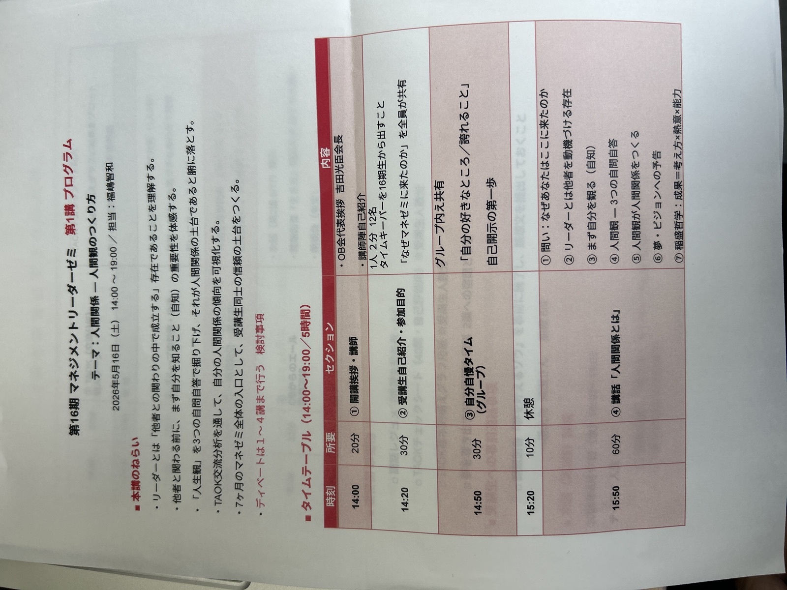
講話の骨格
- 問い「なぜここに来たのか」から始まる。受講生それぞれの胸に手を当てさせる。
- リーダーとは「他者を動機づける／巻き込む／共に向かう存在」。リーダーの仕事の本質は人間関係にある。
- 自問自答の習慣化。「他力本願」（依存）ではなく、「自分で問い、自分で答える」自分を鍛える。
- 人間観の3つの問い：自分自身をどう見るか／自分をOKと言えるか／他者とどう関わっているか。
- TAOKチェック → 基本構えグラフ（4象限）で、自分の傾向を可視化する。
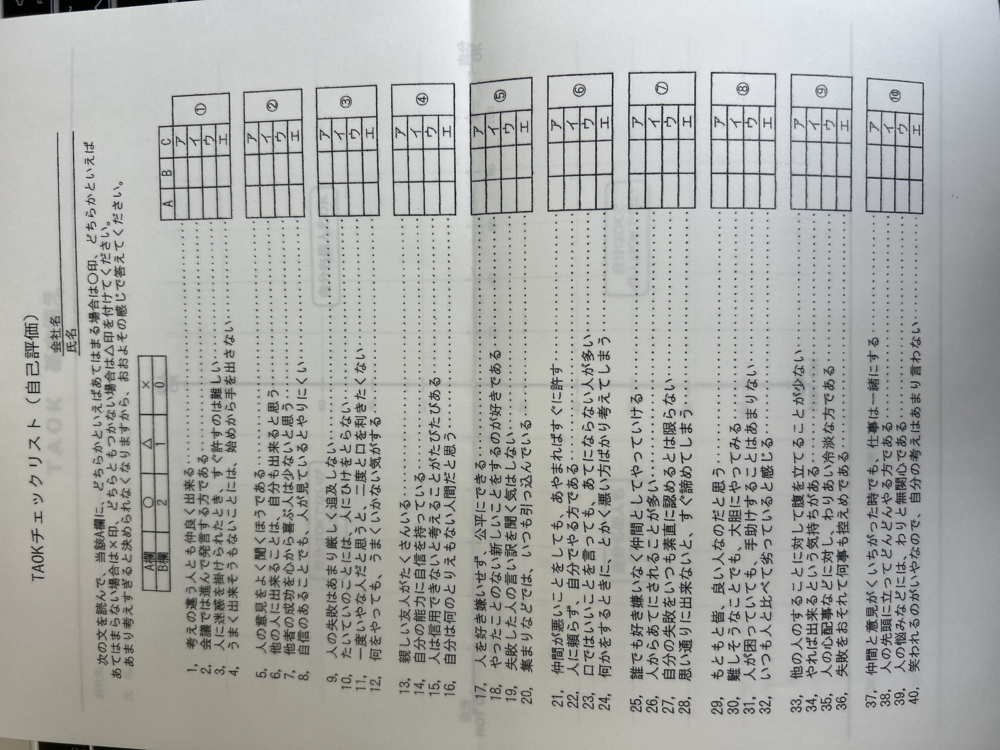
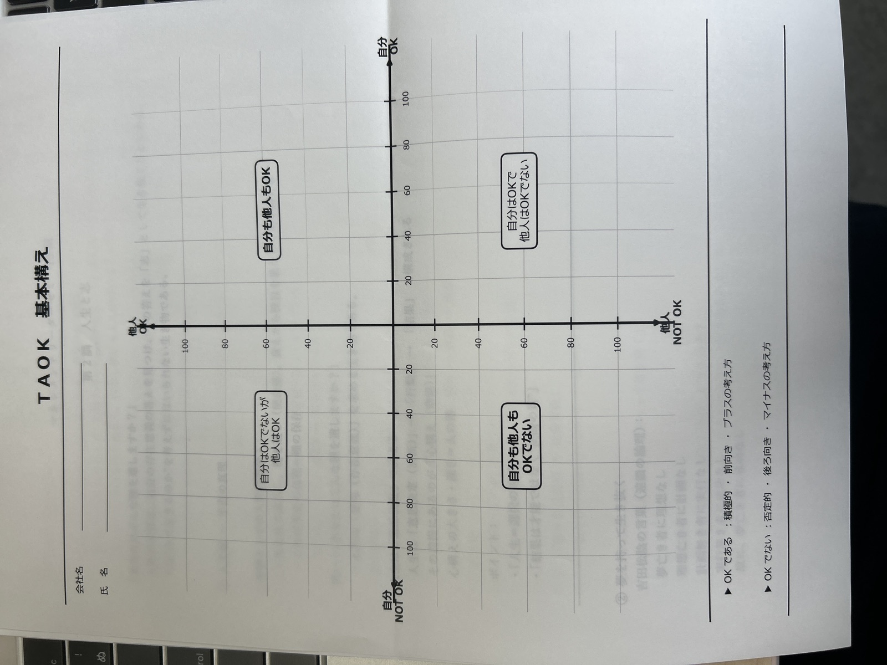
- マネゼミの大事な考え方：成果＝考え方 × 熱意 × 能力。
稲盛さんは"結果"と書かれていますが、マネゼミではあえて"成果"を使います。
成し遂げたいことを掲げ、行動を起こした先のものが成果です 福嶋講師
- 吉田松陰「夢なき者に成功なし」。次講「人生と志」への接続。
福嶋講師の自己エピソード
私が4期で受講した時、会社は創業期の厳しい状況にありました。
あの時に「人の役に立つ人間になる」と決めた。それを繰り返すうちに、行動が変わってきた 福嶋講師
抽象論を、自身の体験で接地させる導入が印象的だった。
3. リハーサル後フィードバックと議論
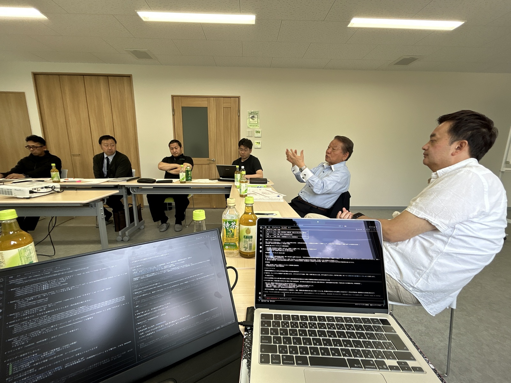
講話直後から休憩を挟まず、各講師の意見が次々と出た。「玄関の作り方」「TAOKの位置」「志の発表のあり方」「松尾会長中心ではないマネゼミの意味」 — 構成の根幹に関わる論点が並んだ。
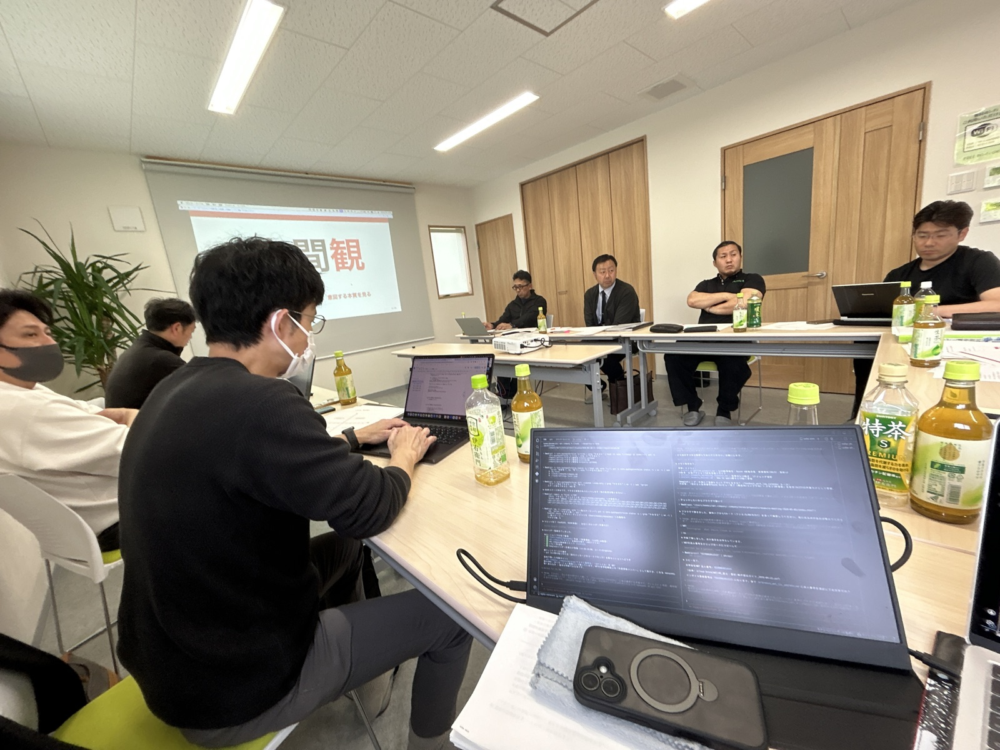
國元氏：玄関の構成への懸念
去年は「自己確立と人間観」が第1講のテーマでした。
今期は「人間観」のみで、第2講が「人生と志」。
「自己確立」をどこでどう扱うか、玄関（入り口）の構成が薄くなっていないか気になります 國元氏
去年は脳科学的な題材も題材として組み込まれていたが、今期は構成から外れている。「玄関」の作り方が、本日のフィードバックの最大の論点となった。
穴井氏：TAOKを先に — 構成順の提案
じゃあTAOKは最初にやります? 前倒しのほうが。
何もない状態でやったら戦略が変わりますからね 穴井氏
講話で「自問自答」「他人もOKでなきゃいけない」を先に出すと、TAOKシートが「正解探し」になってしまう。ゼロ状態でTAOKをやってから講義に入る方が、受講生の腹落ちに繋がる、という構造的な指摘。本日の講話の言葉の強さゆえに、受講生が「あるべき」に引っ張られる懸念も背景にある。
清田氏：志の発表はしない
志の発表は、しない方がいい。立派すぎる志を発表しちゃうと、みんな考えなくなる。
志を掲げ見出すのが、このマネゼミの7ヶ月で一番山があるところ。
講師が先にそこを発表すると、よくないのかな 清田兼明氏
講師側が「正解」を見せすぎると、受講生の自分で考えるプロセスが奪われる、という構造的な指摘。発表は「やった結果、今こうなった」という事実報告型に切り替える方向で合意。
穴井氏：詰め込みと「松尾会長中心ではない」マネゼミ
前回と大きく違うのは、松尾会長中心の真似ゼミじゃないというところ。
受講者がどう認知するか、ぶっちゃけよく分からないんですけど、
福嶋さんのこの1個目で言うなら、僕はもっと詰め込んだ方がいいと思う 穴井氏
毎回「詰め込みすぎ」という意見が出るが、本質情報の密度は保ちたい — そんな問題提起。松尾講師の10〜15分があるなら、村田統括の10〜15分も入れてはどうかという案も浮上。
松尾会長：「観」とホモサピエンスの本能
議論を引き締める形で、松尾会長が「観」と「人間関係」の関係を整理し直した。
「観」というものは、自分とは別に標準であり、原理原則。本質なんだ。
だから観を考えると、自分が分からないことが分かるようになる 松尾会長
ホモサピエンスは、もともと弱かったから、家族を超えて部族と部族が市で繋がることができた。
連なる、連体が連なる、手と手が繋がる。
一つだけ出たら離れるわけです。そこをどうやって喋るかは別として、
意識を持って喋った方が伝わると思います 松尾会長
「強がること」ではなく「弱かったからこそ繋がれた」というホモサピエンス本能の話と、吉田松陰の生活が日本を変えたという成果論。第1講「人間観」の核となる視座として、講話に織り込まれることになった。
本日の主要決定
| 項目 | 修正前 | 修正後 |
|---|---|---|
| TAOKの位置 | 講話の中盤 | 講話の冒頭（ゼロ状態で先にやる） |
| 志の発表 | あり | なし（事実報告型に変更） |
| 講義時間 | 60分 | 50分目安に短縮検討 |
| 第1講冒頭の場作り | 未定 | 福嶋が自ら登壇 |
| 村田統括の出番 | なし | 10〜15分の枠を検討 |
TAOK採点シートの整備
受講生が毎回「書き方が分からない」「必死型になる」状態が続いていた。今期から整備する。
- 記入欄を分離：A欄に○△×、B欄に点数（○=10点、△=5点、×=0点）
- 計算欄付きの採点紙：列ごとに合計、最終100点換算
- 計算式入り説明書：受講生が初見でも完結する
- 次回リハーサルまでに叩き台 → 2週間前に受講生へ配布
整理しようよ。整理しようよ。毎回、毎回みんな忘れるよ 議論の中での発言
資料配布のタイミング変更
これまでは当日渡しだったが、今期からタイムテーブルとワーク資料を2週間前に配布。ただし講義内容（PAO系・メニシアなど）は含めず、ワーク部分のみ事前共有。事前に答えを調べる行動を防ぐ意図。
次の節目
第2講 打ち合わせ
2026年6月1日（月）／場所：キューケンシステム
第3講 打ち合わせ
2026年7月1日（火）または7月2日（水）／場所：輸送団地協同組合
講師会 研修旅行
当初の5月31日予定が欠席者続出でリスケ。6月・7月の土日、9月（シルバーウィーク／結婚式）まで全滅したが、最終的に2026年10月17日（土）〜18日（日） 京都で確定。
もう決めたら今度はもう、リスケなしよ 松尾会長
第2講に向けて
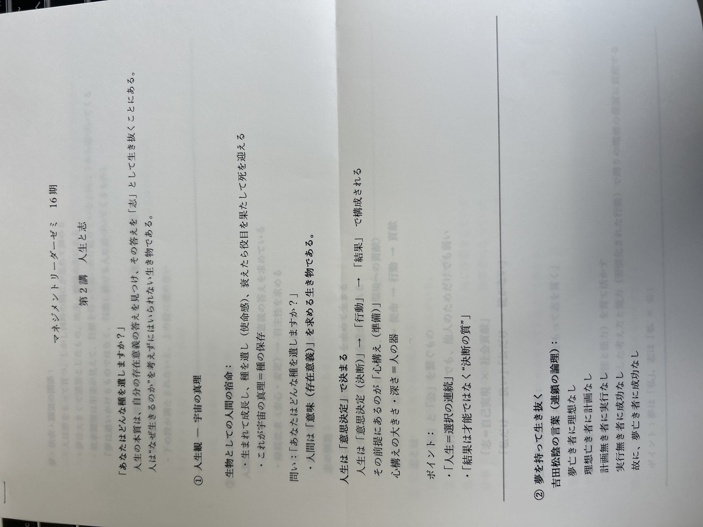
第2講は2026年6月17日（水）14:00-19:00、テーマ「人生と志」、担当：穴井・光澤、課題図書「生き方」（稲盛和夫）。
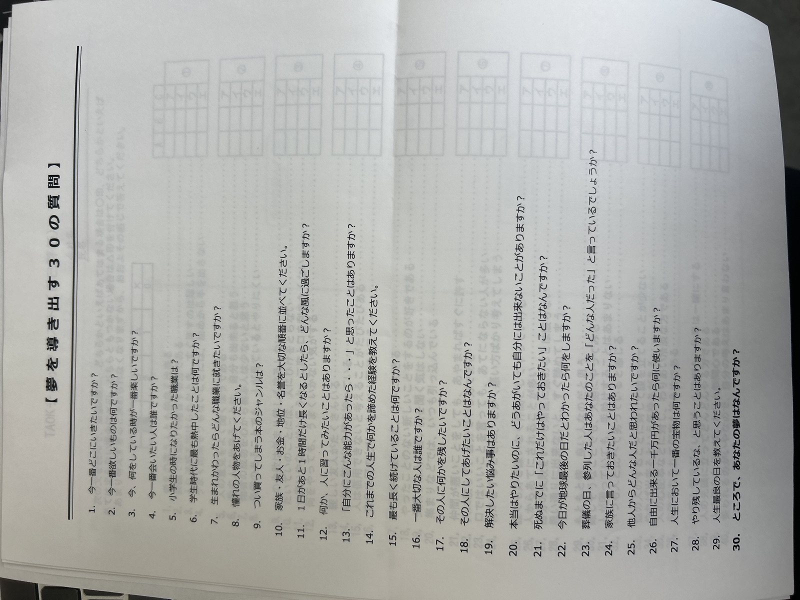
振り返り講義の登壇者調整
本日の議論で、振り返り講義の運用について部分的な整理がついた。第1講冒頭の「場作り」（目的提示）は、福嶋氏自身が登壇する方向で確定。
私が振り返りをするということで、2個目から振り返りの出番があったらいい。
1個目だけは冒頭に俺から何か喋ろうかと 福嶋講師
第2講以降の冒頭振り返り講義の登壇者については、引き続き調整を進める。本日のリハ録音と本ニュースレター、そして松尾孝氏作成の第2講レジュメを基盤にすれば、円滑にバトンを渡せる準備が整う。
会場紹介 — フクシマ建材
本日のリハーサル会場は、第1講担当・福嶋講師の自社オフィス。熊本県菊池市泗水町、緑に囲まれた立地に建つ、清潔感のあるブリック調の社屋。
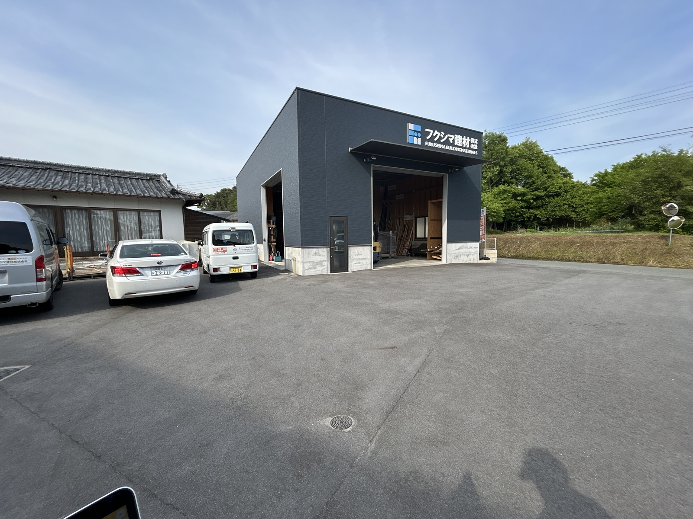
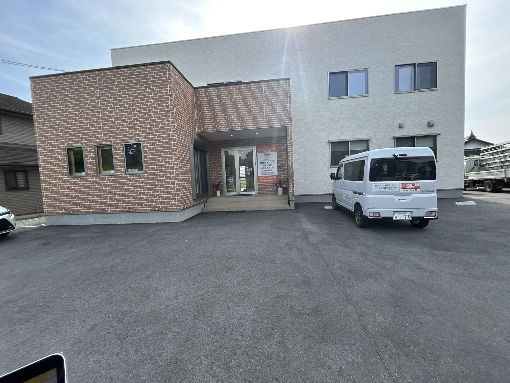
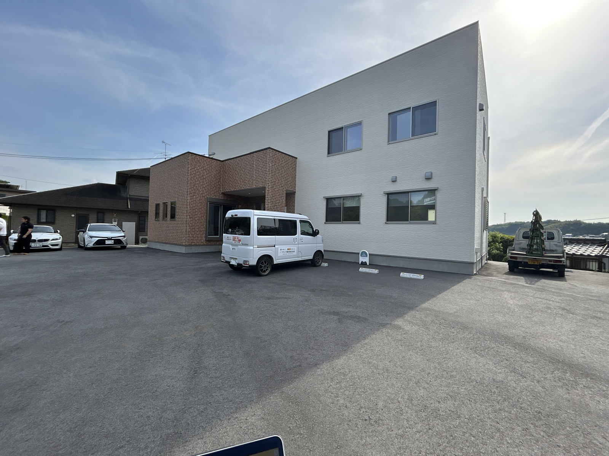
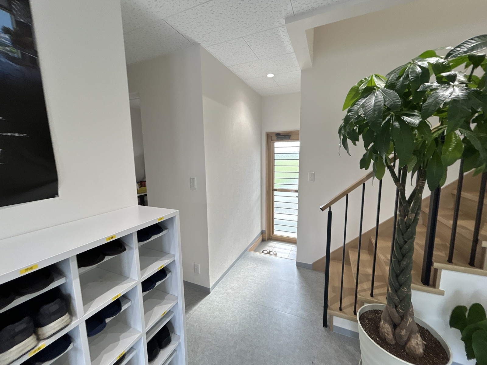
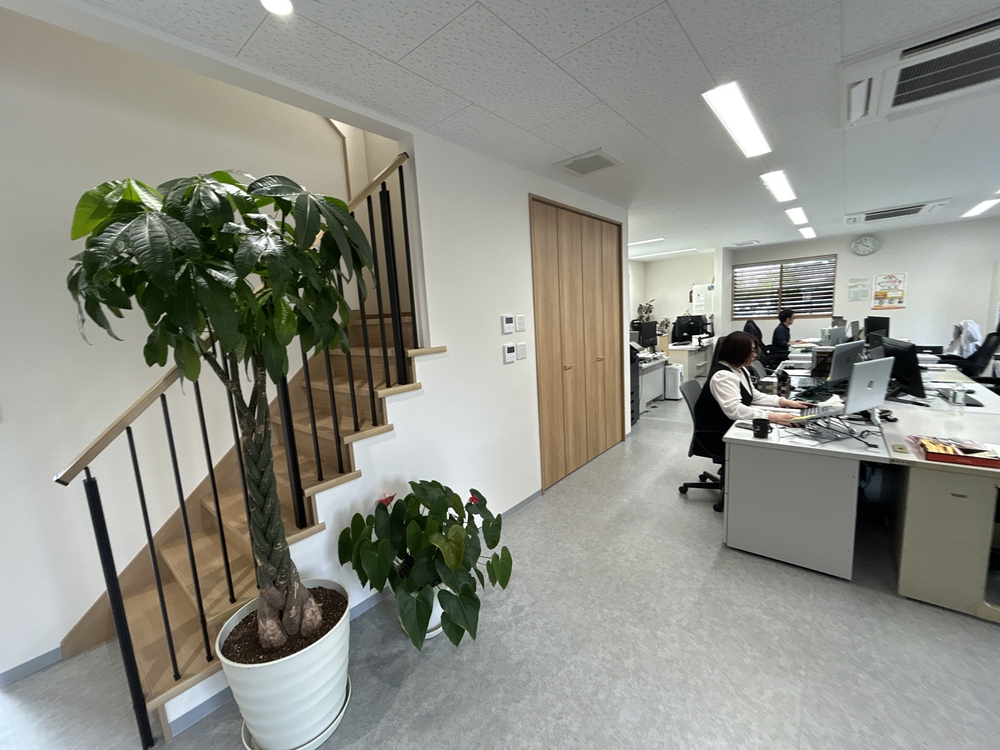
講師会のリハーサルが、講師自身の「日常の現場」で行われる。これも、マネゼミが「思想の言葉」を「経営の現場」に着地させる団体であることの一つの表れかもしれない。福嶋講師、本日もありがとうございました。
編集後記
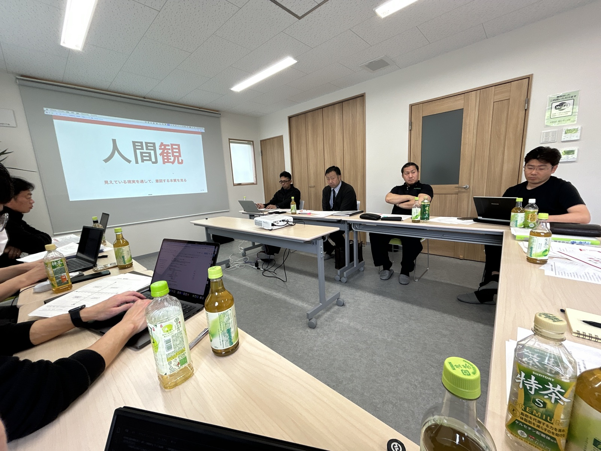
リハーサルというより、設計会議＋実演＋同期確認が一日で動く密度の高い場だった。「過ぎるのが当たり前の文化はマネゼミとしてどうか」という清田氏の問いと、「世の中、時間厳守は当たり前」と返す松尾会長のやりとりに、この団体の思想的土台が、毎回その場で再生産されている手触りがあった。
「玄関」の議論は次回までの宿題。お楽しみに。
もう一つ、本日の最終局面でひっそりと決まったこと。10月17・18日、京都行きが確定した。「もう決めたら、リスケなしよ」という松尾会長の言葉が、一日の議論の濃さを締めくくった。マネゼミは、決めたら走る団体であるということを、改めて思い出させる場面だった。
研修旅行までに、第1講・第2講・第3講の3つの本番を駆け抜ける。今号に詰め込んだ決定の数々が、その3講の手触りを変えていくはずだ。